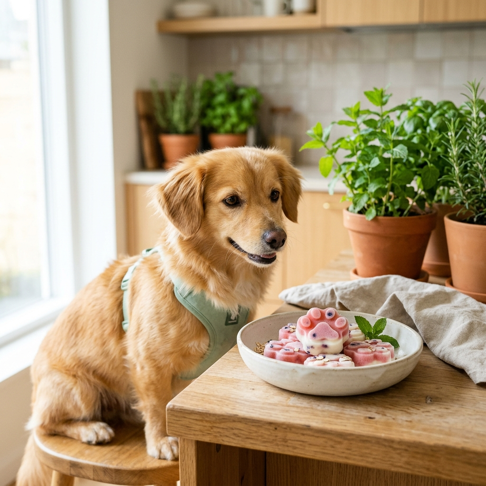

A diferencia de las personas, los perros casi no transpiran a través de la piel; regulan su temperatura corporal principalmente mediante el jadeo y a través de las almohadillas de sus patas. En los días calurosos o después de un paseo templado, ofrecerles un premio frío casero ayuda a hidratarlos y al mismo tiempo les brinda una actividad de lamido relajante.
1. Ingredientes seguros y alimentos que debes evitar
Antes de congelar cualquier fruta o líquido en casa, conviene separar los ingredientes que hidratan sin riesgo de aquellos que pueden irritar su sistema digestivo o resultar tóxicos:
- Ingredientes seguros para uso frecuente: Sandía sin semillas ni cáscara (compuesta en un 92% por agua), arándanos frescos, pepino pelado en trozos pequeños, puré de calabaza cocida natural y caldo casero de huesos o pollo cocido exclusivamente en agua (sin sal, cebolla ni ajo).
- Ingredientes para ofrecer con moderación: Yogur griego natural sin azúcar ni edulcorantes y deslactosado, o kéfir suave (máximo una cucharadita por cada 10 kg de peso corporal para evitar diarreas osmóticas).
- Alimentos estrictamente prohibidos: Uvas y pasas (pueden provocar fallo renal agudo incluso en pequeñas cantidades), chocolate o cacao, aguacate, nueces de macadamia y cualquier producto "sin azúcar" que contenga xilitol (azúcar de abedul).
2. Receta casera en tres pasos
Solo necesitas cinco minutos y moldes flexibles de silicona (que permiten desmoldar sin que queden astillas de plástico rígido):
- Licuar la base: Coloca una taza de sandía sin semillas con media taza de agua filtrada o caldo casero sin sal. Tritura durante 15 segundos hasta obtener una mezcla homogénea.
- Servir en moldes: Vierte el líquido en moldes de silicona o sobre un tapete de lamido. Puedes añadir un arándano entero en cada cavidad para que tenga una textura distinta al lamer.
- Congelar y ofrecer: Lleva al congelador durante tres horas. Al sacarlo, déjalo reposar un minuto a temperatura ambiente antes de dárselo para que el hielo no se adhiera a su lengua.
3. Cuándo el calor deja de ser normal: señales de alerta
Un premio frío es un buen complemento para refrescar a tu perro en casa, pero no sustituye la atención médica si presenta síntomas de golpe de calor. Acude al veterinario de inmediato si notas:
- Jadeo muy rápido, ruidoso o con saliva espesa: Que no disminuye después de descansar a la sombra.
- Encías de color rojo muy intenso, oscuro o azulado: Señal de que le cuesta oxigenar adecuadamente.
- Debilidad al caminar, tropiezos o letargo repentino: Dificultad para mantenerse de pie o responder a tu voz.
Referencias Científicas y Medicina Basada en Evidencia (EBVM)
- World Small Animal Veterinary Association (WSAVA) Global Nutrition Committee. Guidelines on Selecting Pet Foods and Dietary Supplements for Dogs and Cats. Journal of Small Animal Practice, 2021. DOI: 10.1111/jsap.13318.
- European Pet Food Industry Federation (FEDIAF). Nutritional Guidelines for Complete and Complementary Pet Food for Cats and Dogs. Bruselas, Bélgica, edición 2024.
- National Research Council (NRC). Nutrient Requirements of Dogs and Cats. The National Academies Press, Washington D.C., 2006. ISBN: 978-0-309-08628-8.
- American Society for the Prevention of Cruelty to Animals (ASPCA). Animal Poison Control Center (APCC): Food Hazards and Toxin Database for Companion Animals. Urbana, IL, 2025.
- Freeman, L. M., et al. Current knowledge about the risks and benefits of raw and homemade diets for dogs and cats. JAVMA (Journal of the American Veterinary Medical Association), 243(11), 1549-1558. DOI: 10.2460/javma.243.11.1549.
¿Quieres orientación sobre alimentación para tu perro?
Conoce veterinarias y tiendas especializadas en nutrición canina dentro de nuestro directorio.
Ver tiendas y nutricionistas